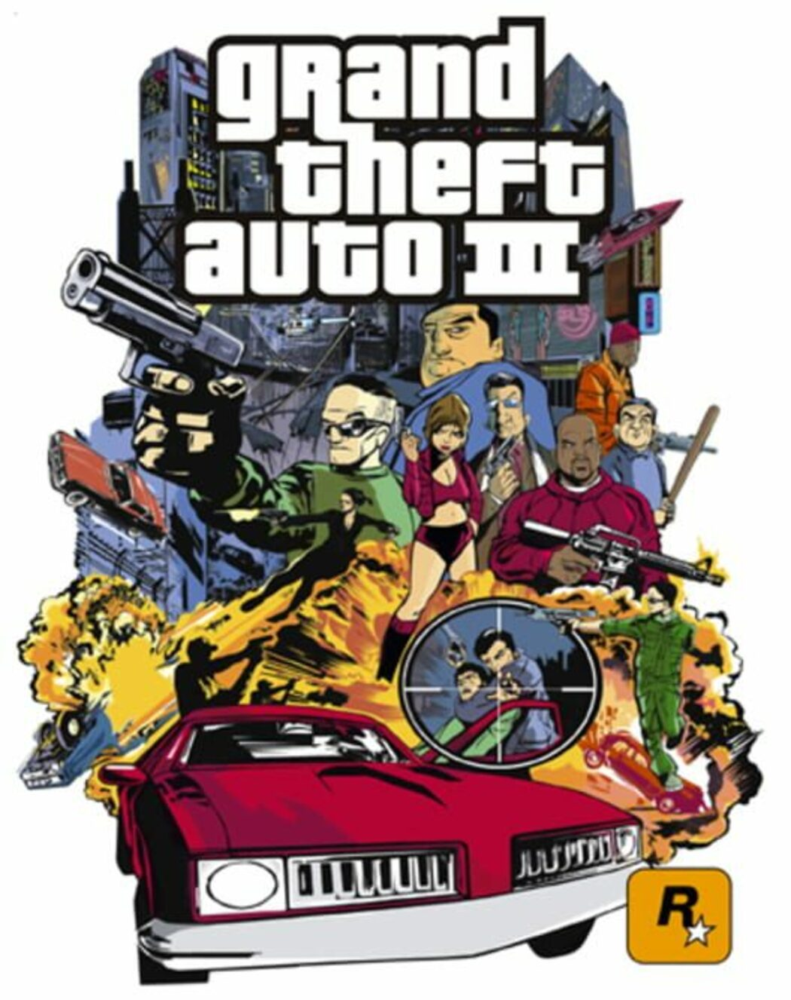
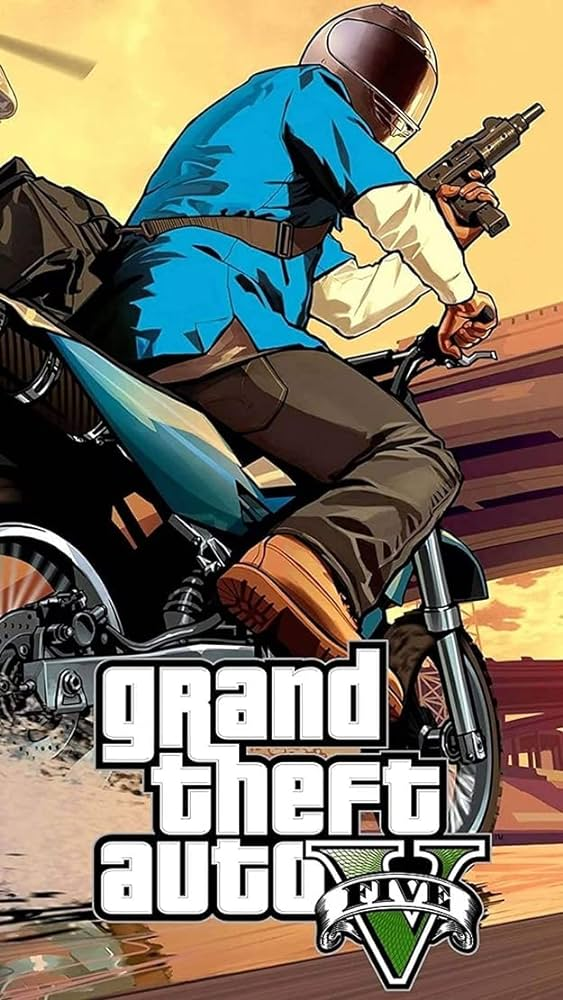
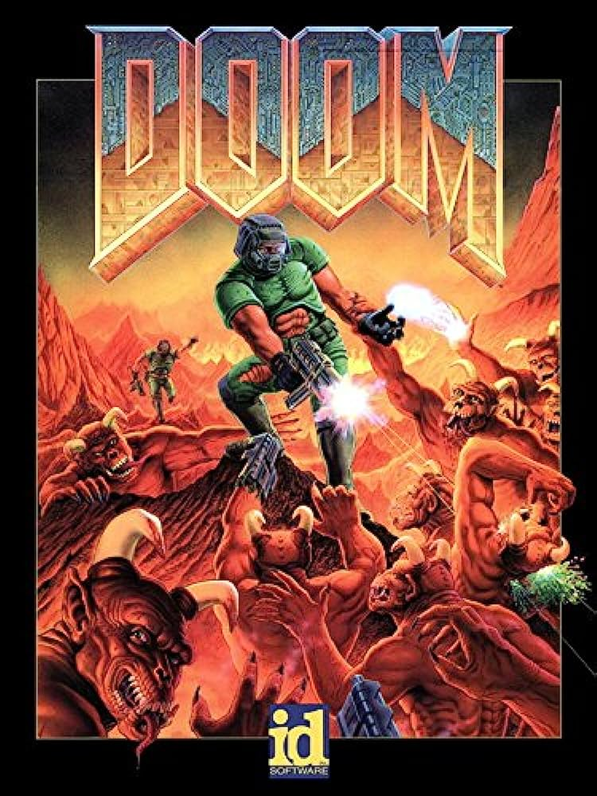
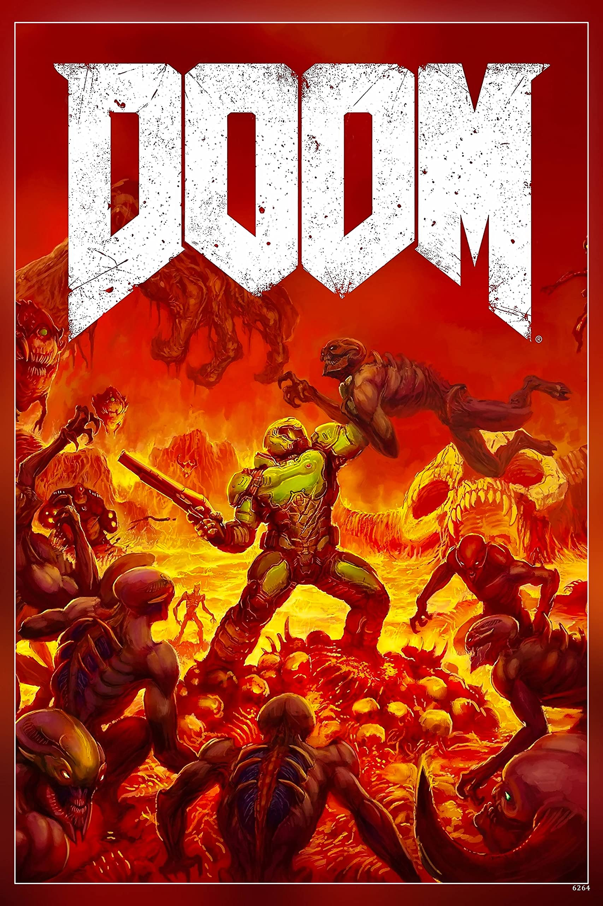
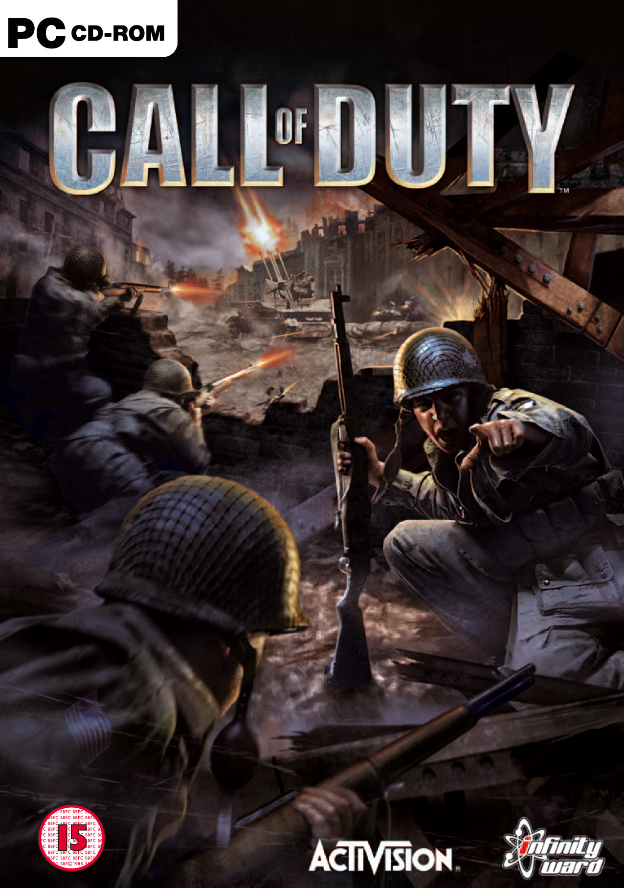
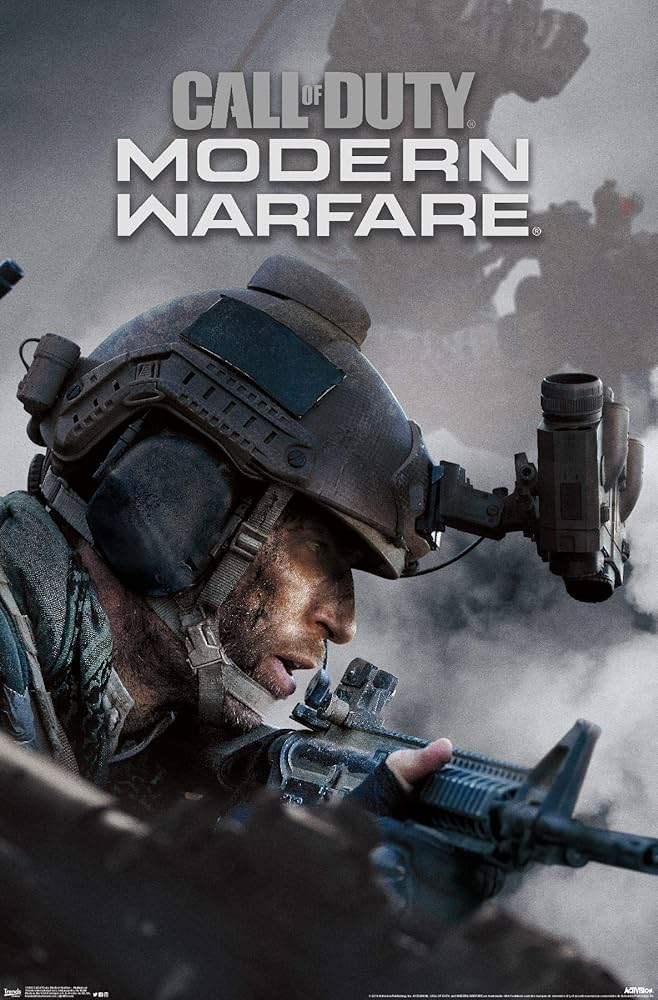

Grand Theft Auto.


The Grand Theft Auto (GTA) series is a cultural phenomenon in the world of video games, known for its open-world design, immersive storytelling, and controversy. Developed by Rockstar Games, this iconic series has left an indelible mark on the gaming industry since its debut in 1997.
GTA is synonymous with open-world exploration and freedom. Players are transported to meticulously crafted fictional cities, such as Liberty City, Vice City, and Los Santos, where they can engage in a wide range of activities. Whether it's completing missions, engaging in vehicular mayhem, or simply wandering the streets, the series thrives on giving players a sandbox to play in.
A hallmark of the GTA series is its storytelling. Each installment introduces players to a diverse cast of characters embroiled in criminal enterprises, political intrigue, and personal dramas. The narratives are often dark, satirical, and peppered with humor, reflecting a gritty and exaggerated vision of the criminal underworld.
GTA has been a lightning rod for controversy due to its mature themes and depictions of violence, crime, and social issues. Yet, it has also been praised for its social commentary and sharp satire, offering a lens through which players can explore societal problems.
The series has consistently pushed the boundaries of technology and gameplay. With each new installment, Rockstar has introduced groundbreaking features, from the transition to 3D graphics in GTA III to the expansive online world of GTA Online.
GTA Online, a multiplayer component introduced in GTA V, has been a massive success, providing players with the ability to engage in heists, races, and other activities in a persistent online world.
In summary, the Grand Theft Auto series is a juggernaut in the gaming industry, known for its vast open worlds, gripping narratives, and cultural impact. It continues to evolve and captivate players worldwide, maintaining its status as a beloved and controversial franchise that has left an indelible mark on the gaming landscape.
Posters- The games GTA 3 (left) & GTA 5 (right). Many credit GTA 3 to be the very first of the open-world 3D games. GTA 5 is one of the GOATs.
Metal Gear Solid.

The Metal Gear Solid series is a legendary and groundbreaking franchise that has left an indelible mark on the world of video games. Created by Hideo Kojima and developed by Konami, this series is celebrated for its intricate narratives, deep characters, and innovative gameplay mechanics. The series revolves around espionage, political intrigue, and the exploits of the iconic protagonist, Solid Snake.
What sets Metal Gear Solid apart is its emphasis on stealth and tactical espionage, encouraging players to think strategically rather than relying solely on firepower. The games are known for their complex and philosophical storylines, often delving into themes of war, ethics, and the consequences of technology.
The series' rich character development has introduced players to unforgettable figures like Big Boss, Liquid Snake, and Revolver Ocelot. Kojima's signature cinematic style and attention to detail have elevated the series to the status of interactive storytelling masterpieces.
Metal Gear Solid has also been a pioneer in pushing the boundaries of gaming technology, consistently delivering cutting-edge graphics and gameplay mechanics. The series has set benchmarks for stealth action games and has mgsd countless titles across various genres.
Overall, the Metal Gear Solid series stands as a testament to the artistic potential of video games, captivating players with its compelling narratives, memorable characters, and innovative gameplay. It has become a cornerstone of gaming history, earning its place among the most revered franchises in the medium.
Images- The MGSV Poster (right) & The protagonist of the series Solid Snake (left)
DOOM.


The DOOM series is an iconic and trailblazing franchise that has significantly shaped the first-person shooter (FPS) genre since its inception in 1993. Developed by id Software, DOOM introduced players to fast-paced, demon-slaying action set in a nightmarish future. The series is characterized by its relentless combat, heavy weaponry, and iconic protagonist, the space marine known simply as the "Doom Slayer."
DOOM's mgs on gaming is immeasurable. It pioneered the FPS genre, popularizing multiplayer deathmatches and coining the term "deathmatch" itself. The game's modding community has been instrumental in expanding its lifespan, giving rise to countless custom maps and total conversions that continue to be enjoyed by fans.
Throughout the series, players have battled hordes of hellish creatures in a variety of settings, from the moons of Mars to the depths of Hell itself. DOOM has consistently pushed the boundaries of technology, delivering groundbreaking graphics and fast-paced gameplay that have set industry standards.
In 2016, DOOM received a triumphant reboot, revitalizing the series for a new generation of gamers. The reboot retained the essence of the original games while incorporating modern design elements, earning critical acclaim for its relentless combat and exhilarating action.
In summary, the DOOM series is a seminal franchise that has redefined and reshaped the FPS genre, leaving an enduring legacy in the world of gaming. It continues to be celebrated for its exhilarating gameplay, iconic imagery, and enduring mgs on the medium.
Posters- The classic poster for DOOM 1993 (left) & The modern poster for DOOM Eternal (2021).
Call of Duty.


The Call of Duty (COD) series is a gaming juggernaut that has dominated the first-person shooter genre since its debut in 2003. Developed primarily by Infinity Ward, Treyarch, and Sledgehammer Games, this franchise is known for its annual releases that explore various historical periods, modern warfare, and futuristic conflicts. What sets COD apart is its cinematic storytelling, immersive multiplayer modes, and addictive progression systems.
COD's single-player campaigns have often been a highlight, offering gripping narratives inspired by real-world events or speculative future scenarios. The series has delved into World War II, the Cold War, and fictionalized global conflicts, giving players a diverse array of settings and missions.
The multiplayer component of COD has been a major draw, offering fast-paced action, a variety of maps, and a multitude of customizable loadouts. The introduction of the Zombies mode added a cooperative and survival-focused element that has become a fan favorite.
With each installment, COD has consistently pushed the boundaries of gaming technology, delivering impressive graphics and audio experiences. The franchise's commitment to delivering polished and accessible gameplay has attracted a massive and dedicated player base.
In summary, the COD series is a gaming phenomenon known for its blockbuster campaigns and addictive multiplayer experiences. It has become a cultural touchstone, fostering communities of players around the world and shaping the modern FPS landscape.
Posters- The games Call of Duty 1 & Modern Warfare. The franchise seems to have lost its footing these years.
The most popular games (probably of all time).
| Name |
Company |
Year |
Units Sold |
| Minecraft |
Mojang |
2011 |
23 Million |
| Grand Theft Auto 5 |
Rockstar North |
2013 |
18.5 Million |
| PUBG |
PUBG Corporation |
2017 |
75 Million |
| Mario Kart 8 |
Nintendo |
2014 |
63.2 Million |
| Witcher 3 |
CD Projekt |
2015 |
50 Million |
| Pokemon Red |
Nintendo |
1996 |
47.5 Million |